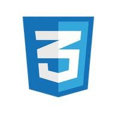
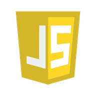
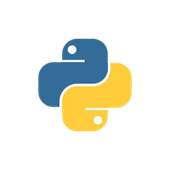
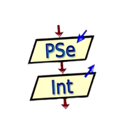
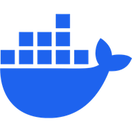
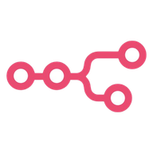
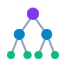
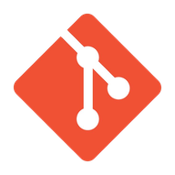

HTML
Estructura semántica y accesible para contenido web organizado.
Tecnologías con las que construyo, despliego, colaboro y organizo mi trabajo.
Estructura semántica y accesible para contenido web organizado.

Layouts con Flexbox y Grid, animaciones y diseño responsivo.

Manipulación del DOM e interacciones dinámicas de usuario.
Tipado estático para código JavaScript más seguro y mantenible.

Resolución de problemas, automatización y persistencia de datos.

Diseño de algoritmos y planificación lógica previa a la implementación.
Consultas y diseño de esquemas para bases de datos relacionales.
Librería para construir interfaces a partir de componentes.
Desarrollo de aplicaciones móviles multiplataforma.
Componentes reutilizables y encapsulados, como en Campus Parking.
Manipulación directa del DOM, base de la SPA sin frameworks de EduTrack.
Gráficas para visualizar datos en dashboards.
Interfaces que se adaptan a móvil, tablet y escritorio.
Servicios y APIs del lado del servidor con JavaScript.
Framework de Node.js para construir servidores y APIs.
Framework de Python para construir APIs rápidas y tipadas.
CMS headless para modelar contenido y exponerlo mediante APIs.
Diseño de APIs REST e integración entre frontend y backend, como en DockerPulse.
Modelado relacional, consultas SQL y administración de datos.
Consultas, relaciones e integridad en bases de datos relacionales.
Base de datos embebida para aplicaciones ligeras y prototipos.
Modelos de datos no relacionales orientados a documentos y escalabilidad.
Backend como servicio: base de datos, autenticación y API sobre PostgreSQL.
Diseño y normalización de esquemas, aplicados en la migración de OMS Backend.

Contenedores para entornos reproducibles de desarrollo y despliegue.
Orquestación de servicios multicontenedor con un solo archivo de configuración.
Entorno Linux en Windows para herramientas de línea de comandos.
Despliegue continuo de sitios estáticos y aplicaciones web desde Git.

Automatización de flujos de trabajo e integración entre servicios.
Documentación y pruebas de cada servicio de una API.
Trabajo con la terminal y scripts de shell.
Conceptos básicos de la nube de Amazon.
Fundamentos de IA, modelos aplicados con Python e integración de IA en proyectos web.
Modelos entrenados con datos etiquetados para clasificar y predecir.
Identificación de comportamientos fuera de lo normal, aplicada en DockerPulse.

Motor de inferencia con encadenamiento hacia adelante y hacia atrás, como en el diagnóstico de PC.
Certificación en Ciberseguridad de IRSI y SISAP (593 h).
Fundamentos de monitoreo y análisis de eventos de seguridad.
Identificación y evaluación de riesgos que afectan la información.

Control de versiones, ramas y flujo de trabajo ordenado.
Repositorios, pull requests y colaboración en proyectos.
Gestión ágil de proyectos: roles, eventos y trabajo iterativo.
Análisis de datos con fórmulas, tablas y funciones.
Documentación formal con estructura y formato profesional.
Presentaciones claras con diseño y narrativa visual.
Piezas gráficas, presentaciones y contenido visual.